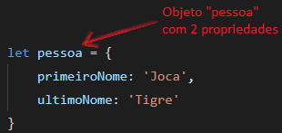
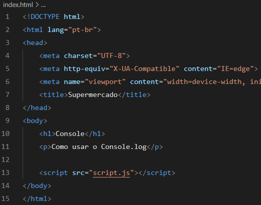
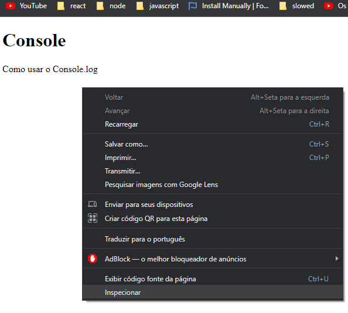
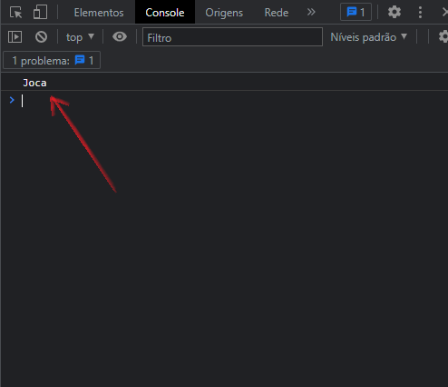

Conceitos Importantes
Aqui neste capítulo veremos alguns conceitos de extrema importância em JavaScript.
Como usar aspas simples e duplas (' ') (" ")
A verdade é que para o JavaScript não faz diferença se você declara uma String com aspas simples ou duplas, para ele as duas maneiras são declarações válidas para uma String. A grande competição por escolher um ou outro é puramente por gosto particular de cada desenvolvedor, muitos preferem simples, porém, outros preferem duplas.
Imagine que você precise escrever a seguinte String:
➜ It's a new game
Ou:
➜ I'm a Front-End developer
Para resolver esse problema deve-se utilizar as aspas duplas:
➜ " It's a new game "
➜ " I'm a Front-End developer "
Mas, e se você precisar destacar alguma palavra com aspas duplas ?
➜ TypeScript é uma “linguagem” de programação
Para escrever essa frase com aspas duplas, devemos utilizar as aspas simples.
➜ ' TypeScript é uma "linguagem" de programação '
Template Strings `${var} blablabla`
É uma nova forma de criar strings e tornar o seu código um pouco mais legível.
Até agora usamos as aspas (simples ou duplas) e o sinal de adição (concatenação) para escrever as saidas de dados.
➜ "Eu tenho: " + anos + " anos"
Na saida de dados fica assim:
➜ Eu tenho 18 anos
Template strings são envolvidas pelo acento crase (` `) em vez de aspas simples ou duplas. Template strings podem possuir placeholders. Estes são indicados por um cifrão seguido de chaves. O mesmo código escrito acima, é escrito da seguinte forma:
➜ `Eu tenho: ${anos} anos`
➜ `Meu nome é ${nome}`
A variável fica dentro das chaves. Dentro das chaves também podem ter expressoes.
➜ `Um mais um é igual a ${1+1}`
Escopo de Variável
Quando você declara uma váriavel fora de qualquer função, ela é chamada de variável global, porque está disponível para qualquer outro código no documento atual. Quando você declara uma variável dentro de uma função, é chamada de variável local, pois ela está disponível somente dentro dessa função.
Basicamente escopo é o limite de alcance que uma determinada variável tem. Se criar uma variável dentro de uma função, esta variável só poderá ser utilizada por esta função.
Diferença entre let, var e const
Var e Let são muito parecidos, eles sao variáveis. O var é uma variável global, ele funciona em qualquer lugar do programa. O let só funciona dentro do bloco que foi declarado.
Atualmente surgiu um recurso chamado let, que pode ser usado para a declaração de variáveis.
Let é, agora, a forma preferida de declaração de variáveis. Não é uma surpresa, já que ela é uma melhoria às declarações com var.
Um bloco é uma porção de código cercado por {}. Um bloco vive dentro dessas chaves. Tudo o que estiver cercado por chaves é um bloco.
Assim, uma variável declarada com let em um bloco estará disponível apenas dentro daquele bloco.
Veja o vídeo explicativo:
https://www.youtube.com/watch?v=ZOx7iTnBqFQ&ab_channel=ProgramadorBR
O que significa objetos, métodos e propriedades
Não entraremos a fundo no estudo dos objetos, apenas veremos o básico para termos uma pequena noção.
Um objeto é uma coleção de dados e/ou funcionalidades relacionadas, que geralmente consistem em diversas variáveis e funções.

Objetos em JavaScript, assim como em muitas outras linguagens de programação, podem ser comparados com objetos na vida real. O conceito de objetos em JavaScript pode ser entendido como objetos tangíveis da vida real.
Em JavaScript, um objeto é uma entidade independente, com propriedades e tipos. Compare-o com uma xícara, por exemplo. Uma xícara é um objeto com propriedades. Uma xícara tem uma cor, uma forma, peso, um material de composição, etc. Da mesma forma, objetos em JavaScript podem ter propriedades, que definem suas características.
O que significa e como usar o console.log
O console é um objeto e o log é um método.
O console é efetivamente um objeto com diversos métodos associados.
O objeto console fornece acesso ao console de depuração do navegador. O funcionamento deste objeto varia de navegador para navegador mas existem determinados métodos que são vistos como padrão. Um desses métodos é o log( ).
O método log() existe essencialmente para permitir o envio de dados para o console de depuração do navegador.
Criaremos um exemplo simples para aprendermos a usar o console.log.


Ao abrirmos o arquivo html no navegador:

Clique com o botao direito do mouse e clique em inspecionar.

Será aberto a seguinte janela, clique em "console".

Veja o vídeo explicativo:
https://www.youtube.com/watch?v=nQ1XX0GrBEs&ab_channel=NodeStudioTreinamentos